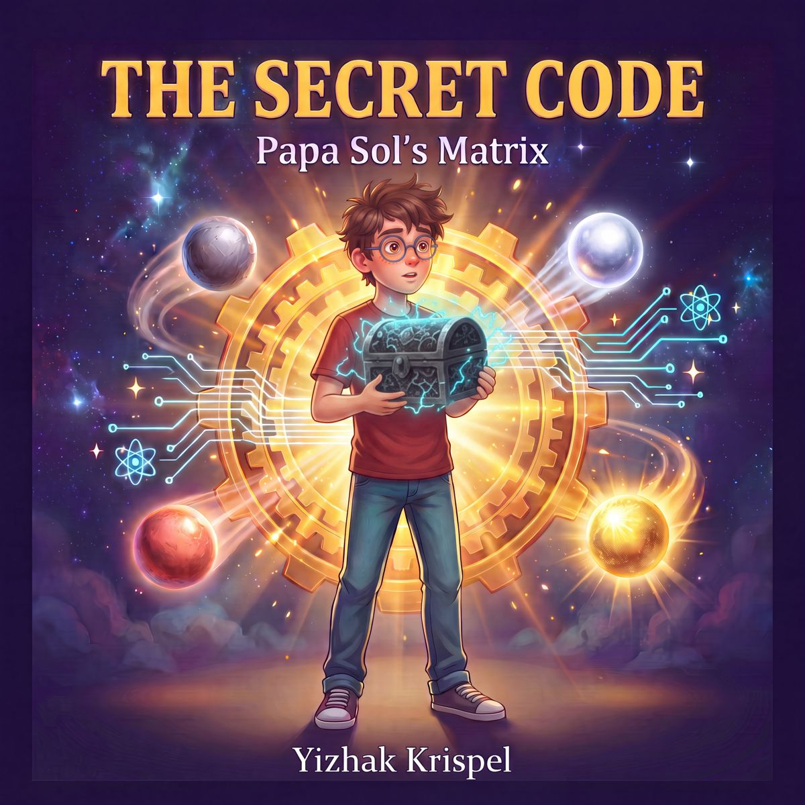
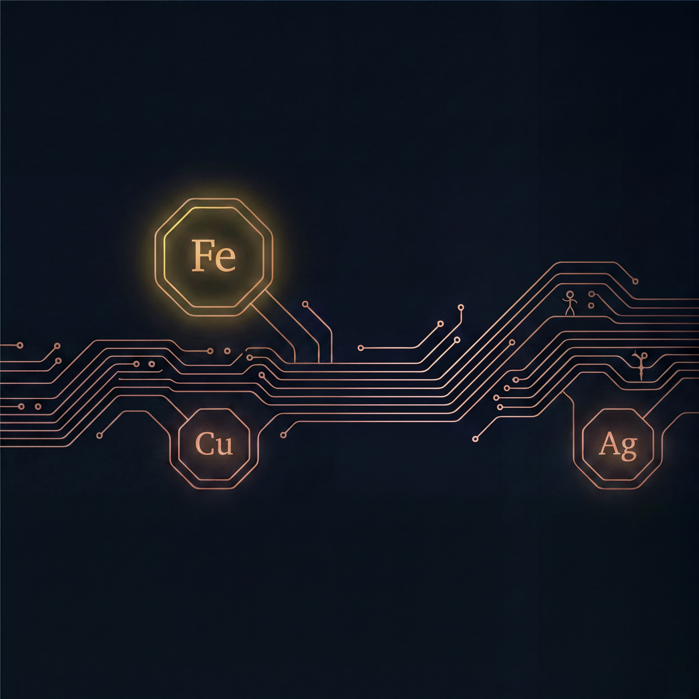
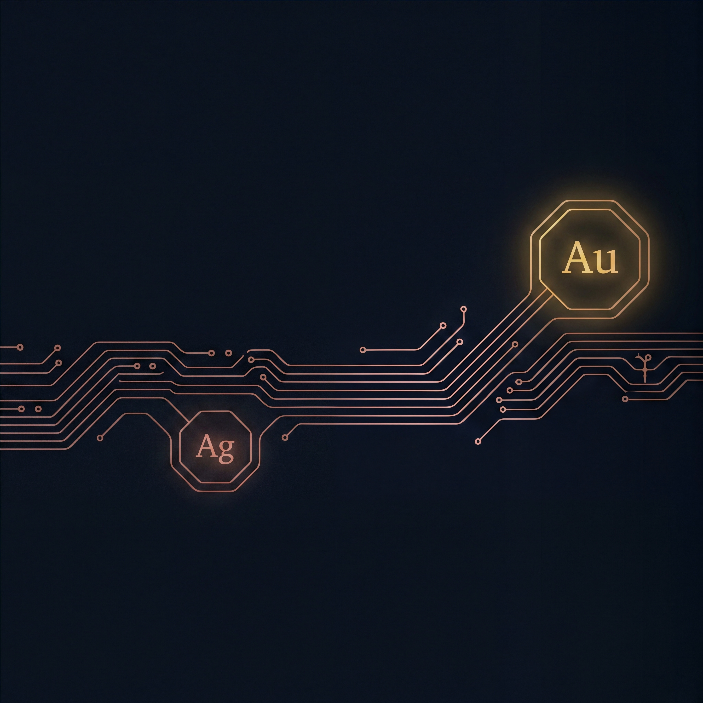
"If I have learned to see differently,
it is only because I looked deep within myself —
for this book is me."
— Robin
"All beginnings are hard — but everything that follows is far more interesting."
Dear Readers
This book was written for you. It will carry you on a magical journey inside the Matrix — toward secrets, ciphers, and discoveries about our world and the human mind. Along the way you will live fascinating adventures as you help Robin develop the code of "Living Memory."
Arm yourselves with patience and ingenuity, carry out the missions in order, and write your answers on the answer sheet that comes with the book.
The magical journey begins now…
The Iron Box
Robin sat in his room, the screen aglow and bright,
thoughts of Papa Sol (Solomon) kept turning through the night.
He knew that time was short, that the code must come undone —
A secret his grandfather had left for him alone.
"Robin, dinner's ready!" Mom, Ruth, called down the hall,
her voice was warm and gentle, full of love for one and all.
But Robin was too deep inside the Matrix and its maze
to notice supper waiting, or the passing of the days.
Then Dad — Jeff — stepped inside and laid a hand upon his son.
"Grandpa always told us the secret's on his shelf, where it began."
He held out an old iron box, heavy, worn, and cold.
"What's inside?" asked Robin, and his curiosity took hold.
"This is the start of a road," said Jeff, and softly smiled.
"Iron is the base of things—the strength that holds the world, my child."
Robin lifted the lid and found a page, all creased and old,
covered in strange markings, like a cipher to be told.
"It's a language code," he whispered. "My English teacher will know."
And he understood the journey wouldn't live in screens alone,
but everywhere a heart still beats and a curious mind will grow —
At school the next clue waited, quiet, for a mind to make it show.
Ruth and Jeff both watched him, and a pride lit up their eyes:
the grandson of old Papa Sol would find where the hope lies.
"Go on, set out," they told him. "And whatever comes, just breathe."
Robin tucked the page into his bag, and readied for the morning's leave.
He pressed his phone against the code, its mystery to unlock,
and watched a lab bloom into view — a bright, unfolding shock.
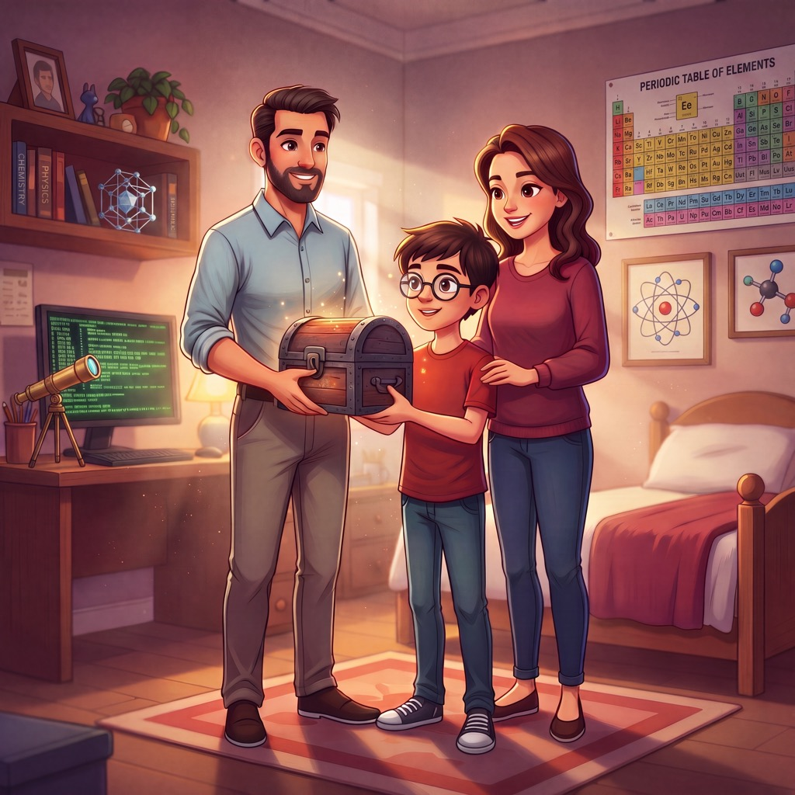
The Riddle of the Scrambled Sentence
Down the corridor walked Robin, his two hands trembling tight,
searching for his English teacher, resolute and light.
Papa Sol's iron box lay warm and heavy in his pack,
a weight of all the questions he had promised to bring back.
Mr. Whitman waited in the room, eyes on the high window's glare.
"Robin — I knew you'd come," he said. "Now the time is here to dare."
He held out a page grown ruddy with the long, slow years,
"The words themselves are the key," he smiled, dissolving all of Robin's fears.
"Your grandfather understood: a language is a living vine —
each word a grape, each clause a branch, all tangled by design."
And Robin saw upon the page a scatter, wild and free,
seven words all out of order, waiting for their melody:
iron · the memory · in the soul · of a person · strong · as · is kept
He knew that he must set them right, in the order they belong,
to find the hidden reason that would sing the sentence strong.
He searched out the subject, then the verb, then what described it all,
and when the line stood finished, he could almost hear it call:
"Memory is kept in the human soul, strong as iron."
The very first word of the message was the target, clear and true.
He wrote it in the Matrix, in the cell that Papa Sol once drew.
And there beneath his fingers, a molecule began to bind —
the atoms of the iron built a lattice, new and fine.
He was ready for the next stop now: the burning lab, the sign.
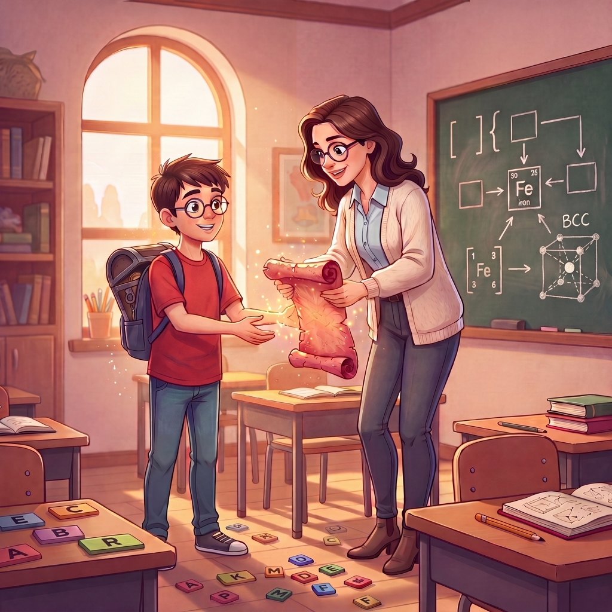
The Hidden Structure of the Metal
Robin rushed to the science lab, sulfur sharp upon the air,
and Ms. Carver, the science teacher, met him with a keen, bright stare.
"To understand iron," she said, "you must first see how it's arranged."
And she set upon the table a strange and ordered shape.
Black points joined in a web, like a pearl of perfect form.
"This is the crystal, Robin. The structure gives the matter its storm.
The iron atom settles in a pattern, fixed and true.
Count the corners of this cube, and you will find the value due."
Robin studied the little cube that stood before his eyes;
he knew this simple number was a key of hidden size.
How many corners has a whole and tidy cube? he thought,
and he remembered Papa Sol, and the geometry he'd taught.
He counted very carefully, one corner, then the next —
four above and four below — and the answer came, unvexed.
Robin smiled: the crystal turned from idea into thing,
and he wrote the number 8 into the Matrix, quivering.
"Iron is steady," said Ms. Carver, and patted his small back.
"As the crystal keeps its order, so a person builds their track."
And Robin felt the journey deepen, meaningful and wide;
Three cells were full now on the grid—the timeline as his guide.
He was ready to find the color — the next secret he would ride.
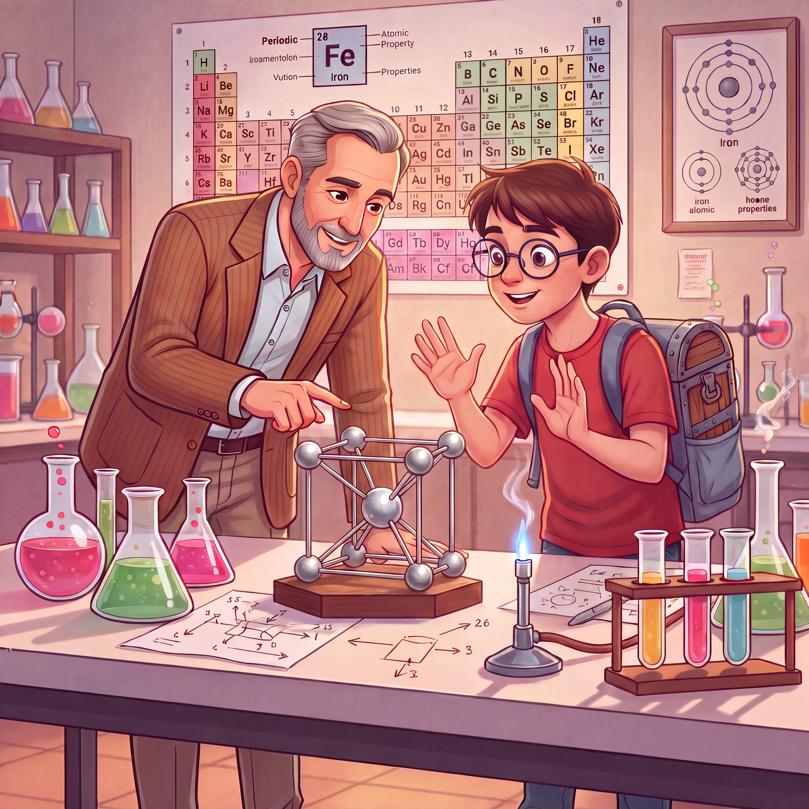
The Metallic Identity and the Periodic Code
On Robin went to the library, to find the weathered book,
the secret of the metal hidden safe in every nook.
He opened up the periodic table with a swift and certain hand,
and the square of iron shimmered like a treasure in the sand.
"Fe," whispered Robin. "Ferrum — that is its ancient name."
He felt the strength of iron rising, steady as a flame.
He looked up at the atomic number crowning it on high —
twenty-six protons in the nucleus, the count that cannot lie.
"Every atom is a world," said Papa Sol inside a dream.
"Iron is the pillar that holds up the daily beam."
And Robin understood that 26—iron's atomic number—would light his way;
And he matched the chemical symbol to the map of stars at play,
for iron is forged in the hearts of suns, in fire and in spray.
Now he had to name the color, the true face of the thing.
"Iron shines silver when it's clean," he wrote without wondering.
A cold and metal grey, strong and sure and set,
and he marked the symbol Fe into the Matrix without regret.
The first element was almost his, held in his small hand;
he grasped the bond of science to intention, to the plan.
One more step remained to take, and the key would be complete —
he was ready for the specific weight, the final clue to meet.
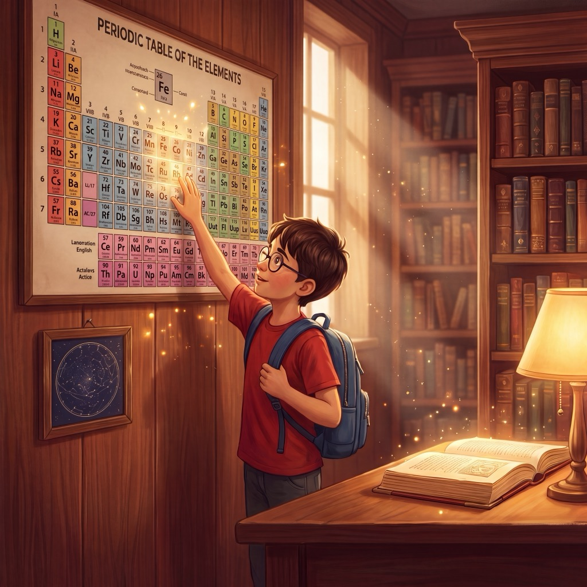
The Secret of Mass and the Digital Key
Robin went down to the cellar where the old brass scales still stood,
he set the block of iron down, and the two pans rocked as they would.
"How heavy is a memory?" he asked beneath his breath —
a question with no easy weight, of grandfathers and depth.
He found a note his grandpa once had fastened to the mass:
"Volume is the where of things—but the weight is the heart, at last."
Robin knew he'd have to measure, to reckon and to find
the true nature of the iron, its body and its mind.
He lowered the iron into water and watched the level climb,
and the volume that it pushed aside revealed the hidden sign.
He divided mass by volume — and the number came out clear:
"7.87," whispered Robin. "The specific weight is here."
(grams per cubic centimeter — the first cell of the vault, austere.)
Then at the margin of the page a QR code began to glow;
Robin scanned it with his phone, and a chat came up to show.
"Papa Sol" blinked in the window, waiting, patient, near —
a bridge across the silence, from a voice he held so dear.
He sent the single word — "memory" — into the mystery,
And back there came the answer: "Iron confirmed! Move on, copper's next to see."
A shiver ran through Robin — Papa Sol was with him still;
technology had turned to human warmth, a bond no years could kill.
That night before he slept, he lay awake and wondered deep:
why does Grandpa lead him on through secret after secret to keep?
Is there a hidden bond where science, life, and truth all meet?
He was ready for the coming chapter — the warm red heart of copper's heat.
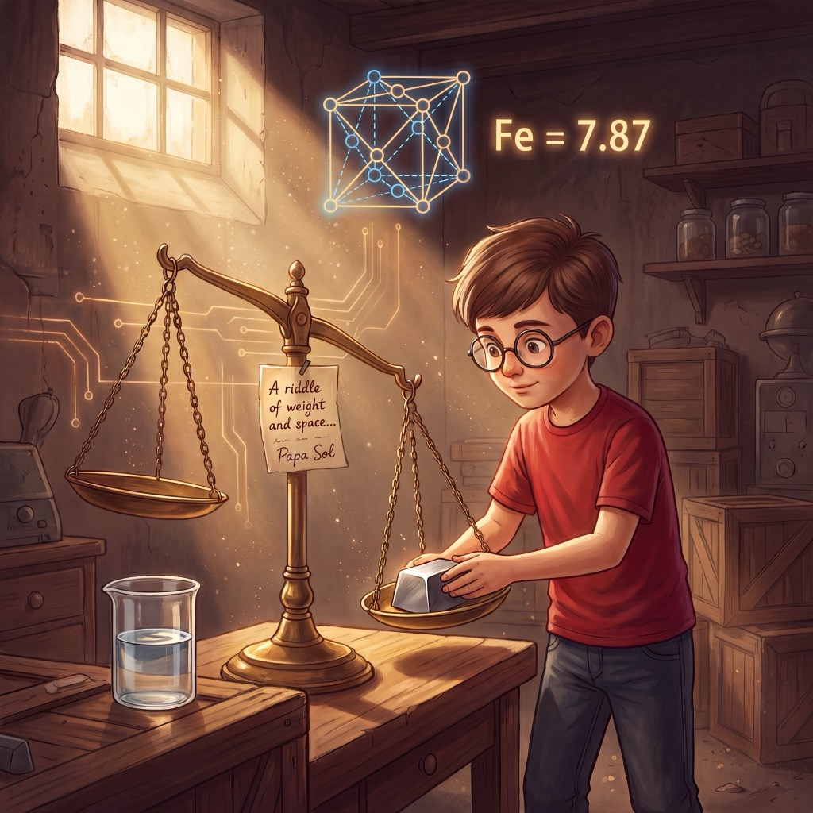
The Conducting Bridge
Robin climbed up from the cellar, the first key in his hand,
the glow of the screen before him, the power at his command.
Iron was only the framework—the skeleton, strong and spare;
now a warmer metal called to him, on the kitchen's rising air.
Mom — Ruth — was brewing tea in an old and gleaming pot,
copper like a hidden sun, red-orange, glowing hot.
"This was Grandma Hannah's kettle," she said, her voice gone soft.
"She always called copper the blessed bridge — that carries the world aloft."
Then the Matrix woke and shivered, new letters asked their place:
"Copper conducts the light," it wrote, in an orange, living blaze.
Dad, Jeff, walked in with copper wire, thin as a strand of thread.
"It all connects through copper — from the ground to the sky overhead."
Robin thought of the freedom of fire, of the current's flowing art —
copper is the movement, the bridge from part to part,
from the ancient world of embers to the circuits of the mind.
"Go to the schoolyard," Jeff whispered. "The green statue hides the sign."
He set out, the scanner ready, on a road he'd never known,
where copper waits in the sunlight—and no one walks alone.
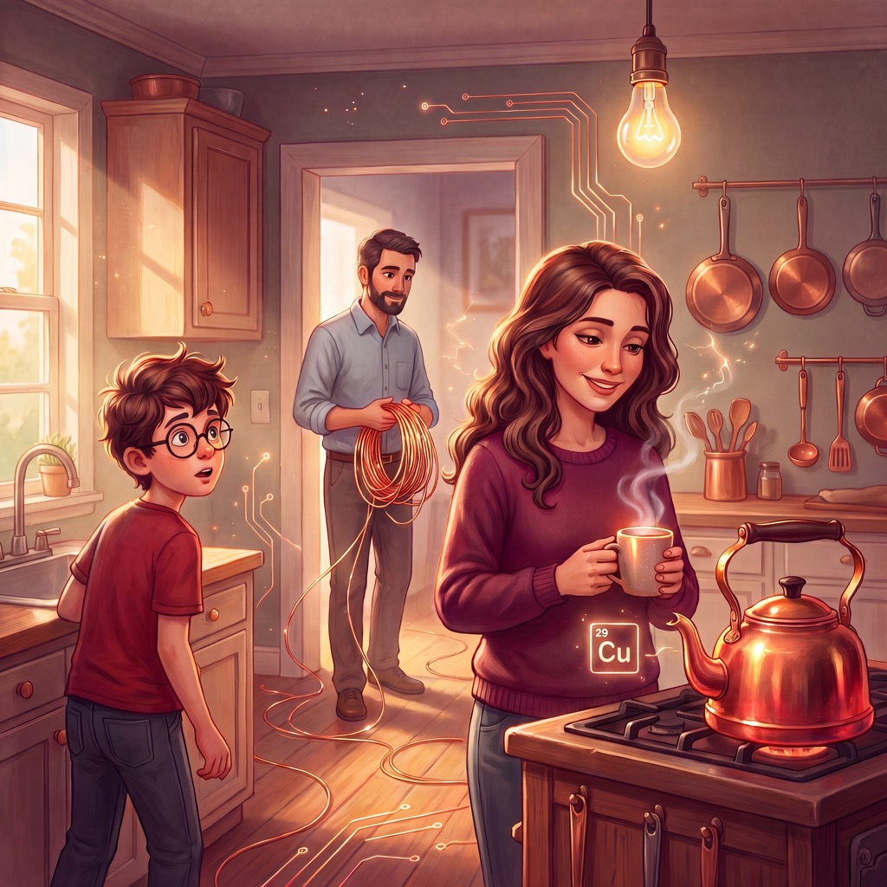
The Green Statue and Ancient Time
Robin crossed the schoolyard where the sun lay soft and long;
an old bronze statue towered there — green, heavy, weathered, strong.
Then Ms. Adams, the history teacher, leaned on its ancient stand.
"You see that green?" she asked. "That's copper, aged by time's own hand —
the slow work of oxidation, the seasons come and gone."
She gestured to a small brass plate the statue rested on.
"To find the next word, you must feel it," and she held an old, red coin,
"for copper was the world's first silver, where trade and empire join."
A grapevine curled across its face; below, in fossil-script,
three letters waited, worn and faint, in the metal lightly clipped.
"Name the age," the teacher asked, "when people first would test and try —
an era named for the metal they learned to bend and ply."
Robin thought of copper and bronze, of kingdoms old and grand,
the age that bridges stone to iron across the shifting land.
"The Bronze Age," Robin wrote it down, the answer sure and true —
and the coin breathed its ancient name, Cuprum, soft and old,
And both went into the Matrix, where copper's story grew.
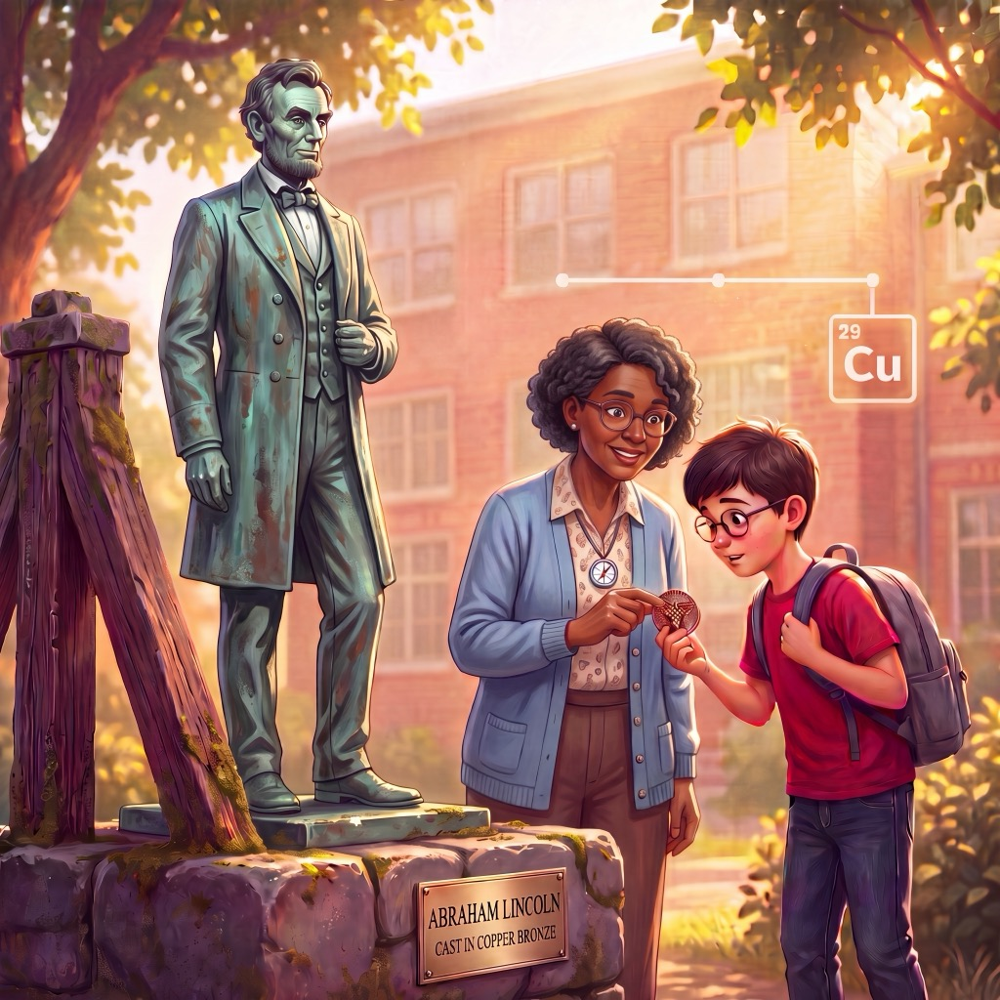
The Wondrous Conductivity and the Crystal's Secret
Robin came back to the lab, where Ms. Carver, the science teacher, stood,
a battery upon the table, a spark of light for good.
"Copper is the swiftest road," she said with quiet grace,
and showed him the copper crystal — a dense and ordered lace.
"Here the electrons wander free, in a hurried, humming stream.
This lattice is face-centered—a cube with a hidden scheme:
an atom on every face, not on the corners alone."
Robin studied the glowing model, seeking the number shown.
A cube has six flat faces — and on each, an atom bright;
he counted them in orange and red, in the crystal's steady light.
"Six," he whispered, "that's the number the Matrix wants from me" —
the structure that lets the current run as free as light runs free.
"When the electrons are shared," she said, "the heat and glow are one.
Copper keeps back nothing — it gives to everyone."
And Robin felt the lesson: how the giving metal flows.
Two secrets of copper now, and on to the name it knows.
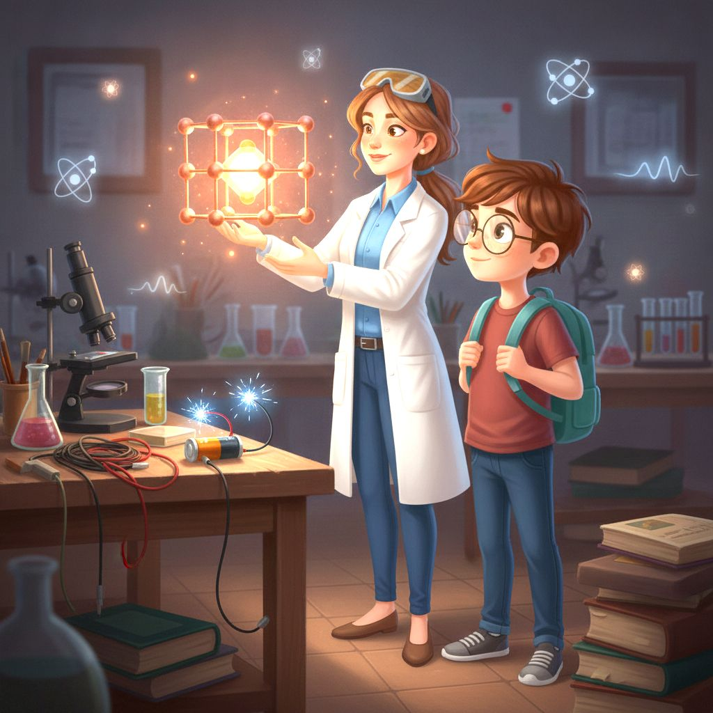
The Secret of Digital Mass and the Hidden Code
Robin raised his phone; the camera woke and shone,
he scanned the copper plate with care, precise and on his own.
And there upon the screen the metal turned to streams of code —
the circuits lit from deep within, where the living data flowed.
"Copper is the way that knowledge travels, door to door."
He watched the digital current pulse, and hungered to know more.
"To find the specific weight," the glowing screen advised,
"open the locked and hidden file" — and Robin realized:
He typed 29—copper's atomic number—as the key;
the screen flashed green and offered up the value, plain to see:
"8.96," read Robin. "Its weight runs heavier than iron's own" —
grams per cubic centimeter, in the Matrix set in stone.
The second element was finished, the conducting bridge complete;
he felt the warm coin in his pocket, a clue both bright and sweet.
Two metals now were his to keep — to build, invent, and rise;
this was the road Papa Sol had planned, though its secret goal still hid from his eyes.
The next key would be silver — like moonlight, cool and wise.
Robin turned toward reflection, and the shimmer of the prize.
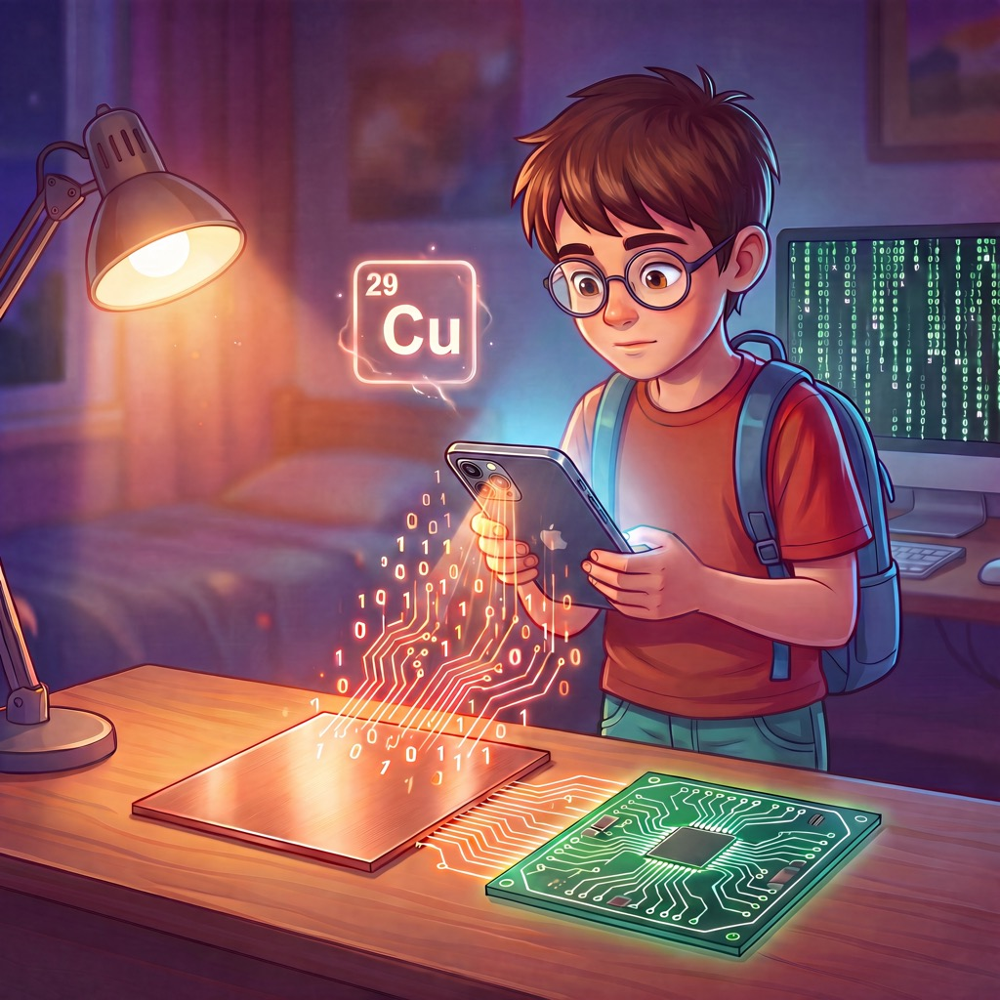
The Clean Reflection
Robin looked at the Matrix, two elements aglow;
iron and copper held their ground, a base the world would know.
But now the screen turned silver-bright, and clear as polished glass—
almost like a looking-mirror where light and shadow pass.
He stepped into Papa Sol's room, where all things kept their place;
upon the shelf a silver loving-cup was spreading quiet grace.
The brightness of that clean, cool metal dazzled like the dawn.
"Silver is the truth," said grandpa's voice, though grandpa now was gone,
"it gives the light back just as it came, and keeps back not a thing."
Robin touched the polished cold, and felt the silver sing.
Then the phone buzzed in his pocket — Papa Sol, once more:
"Look now through the lens, my boy. Silver hides an unseen door."
He raised the camera to the page; the screen began to gleam,
and silver atoms floated up, alive inside the beam.
"This is the highest conductor of all," the message read, "it's true —
it shines beyond every metal, a star just passing through."
And Robin felt the journey turn to a mirror of the soul;
silver would help him see the way and light his hidden goal.
He stepped toward the next new riddle, steady, sure, and free,
where the whitest of the metals held its ancient mystery.
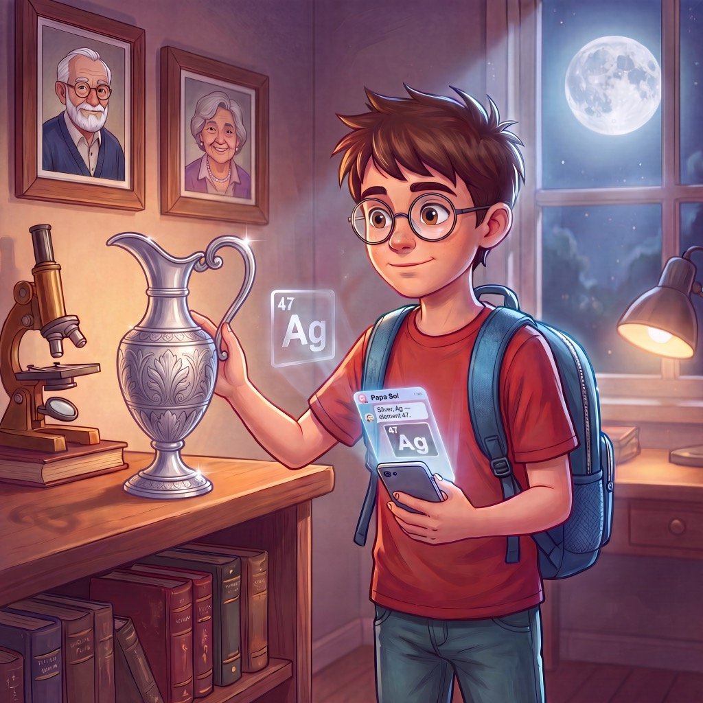
The Latin Coin and Silver's Secret
Robin studied the silver cup and found a tiny seal,
he opened up the chat and asked the bot with learned zeal:
"What is the name that silver wore in the far and ancient past?"
The answer came back clear and bright, astonishing and fast:
"Seek the Latin word from which the symbol Ag was drawn —
it sings of shining whiteness, of a light that's never gone."
Robin typed the letters in, and the Matrix understood:
Argentum — that was the key, the name both old and good.
And that same word, the bot then said, became a country's name —
a far and southern silver land where rivers run like flame.
(In his own tongue, the word for silver means money too, he knew,
a metal and a coin at once, that drives the whole world through.)
He wrote the name into the grid and watched the letters spark;
the page began to shimmer, silver light against the dark.
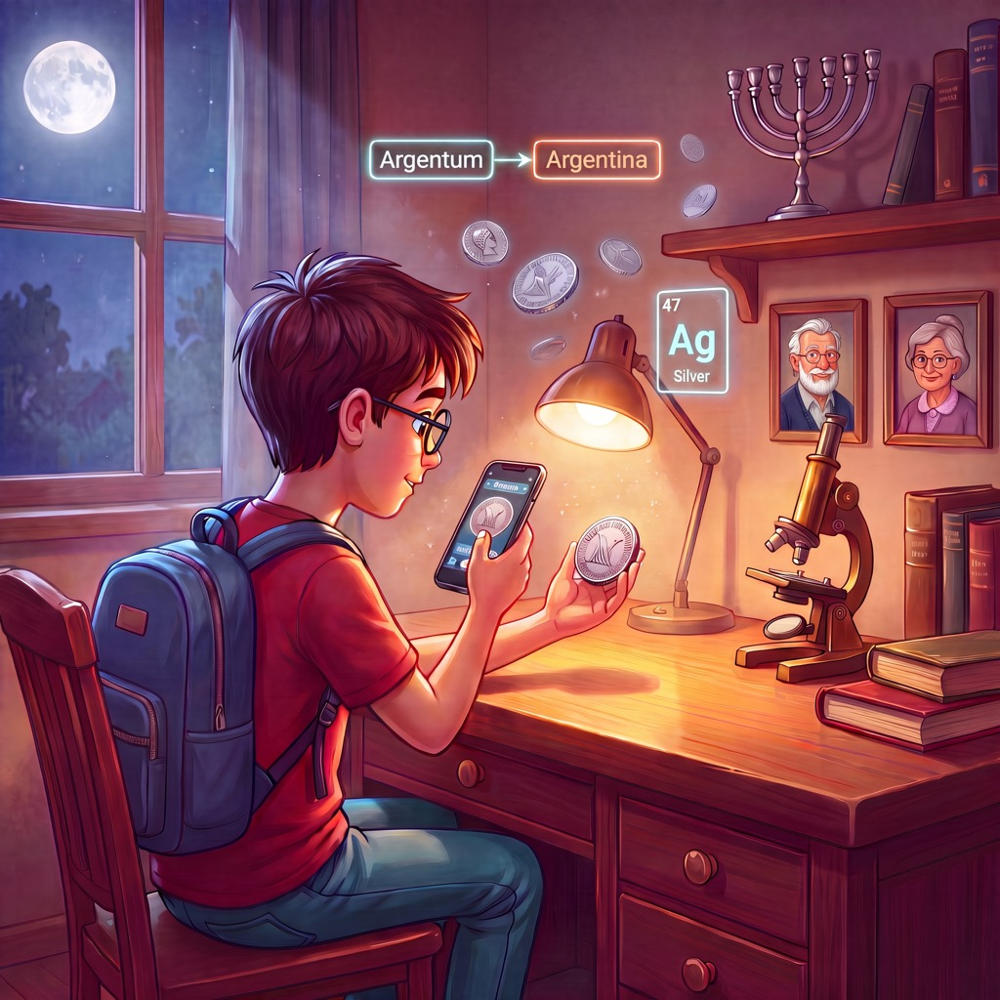
The Perfect Conductor and the Structure's Secret
Robin gazed at the pure science, the metal none could match —
silver carries the current with no equal, and no catch.
He opened up the chat and asked, "What makes it the elect?"
"Its crystal," said the patient bot, "the structure, is the secret you detect.
Like copper, it is ordered in a cube that's face-centered —
an atom on each open face, precisely, calmly centered."
And Robin watched the atoms dance in a lattice, glad and still,
where electrons move in perfect freedom, ungoverned by a will —
no resistance and no holding back, a current running clean;
Silver is the king of heat, the finest ever seen.
Yet silver's cost runs high, and so — for every wire we choose —
copper won the daily race that silver's price would lose.
He wrote the metal's structure down, its conductivity true,
how silver gives its energy, refined and pure all through.
"When nothing blocks the flowing charge," he understood at last,
"the light and the heat run hand in hand, unhurried and steadfast."
He was ready for the symbol now, the letters of its name,
hidden in the periodic map, and waiting for his claim.
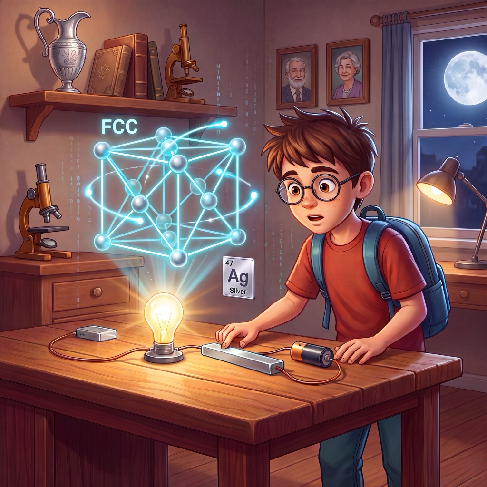
The White Symbol and the Number of the Reflection
Robin faced the periodic table on the glowing screen,
the symbol Ag shone endlessly, dreamlike and serene.
He searched to find the atomic number, the code kept deep inside —
"Forty-seven," whispered Robin. "That's the number — Ag's own guide."
The chat then chimed: "Silver is a dancer of reflection and of light;
long before the digital age, it made the truest sight."
And Robin thought of the old cameras, the films of long ago —
the tiny salts of silver caught the moment's every glow.
For this is the whitest white of all that nature ever wove,
a mirror and a memory, a treasure and a trove.
He wrote the number 47 in the Matrix, clean and clear,
feeling how the silver joins the art and science near.
The page turned smooth and luminous — and one task still lay near:
to weigh the silver's purity, the final silver frontier.
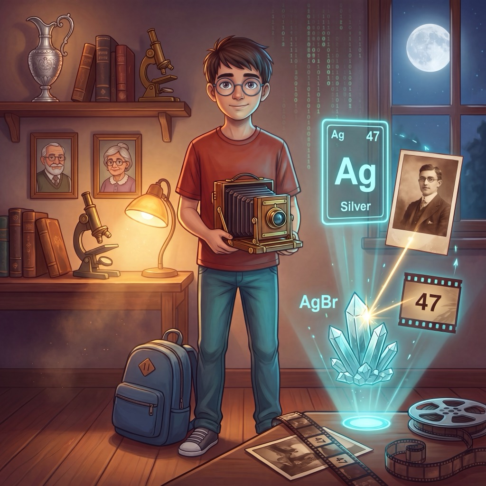
The Secret of Reflection and the Mass of Purity
Robin looked at the silver again and knew, without a doubt,
that silver outweighs copper — heavier, through and through.
He woke the camera, found his angle, steady, sure, and true;
the chat sent him a lens to open — a layered, deeper view.
He aimed the phone; the metal shivered, numbers filled the air,
laid bare for any watching eye that truly wished to care.
"Ten point four nine," leapt the value out of the guarded deep —
the specific weight of purest silver, Robin's to keep.
He typed 10.49 into the Matrix, and its row was done;
The third of four now shining bright, reflective as the sun,
the mirror-metal set at last beside the copper and the iron.
"Silver is the mirror," wrote Papa Sol. "You've passed the test.
Now find the King himself — the one whose light won't rest.
Papa Sol had always loved a challenge, this Robin understood:
to weave together metals, numbers, wit, and daring good,
the living tools he longed to hand his grandson while he could —
the secret that tomorrow's science must carry, as it should."
A shiver ran through Robin: gold, the highest crown, and how —
the final metal, the summit key, the warm and kingly light,
the element that time can't tarnish, endless, pure, and bright.
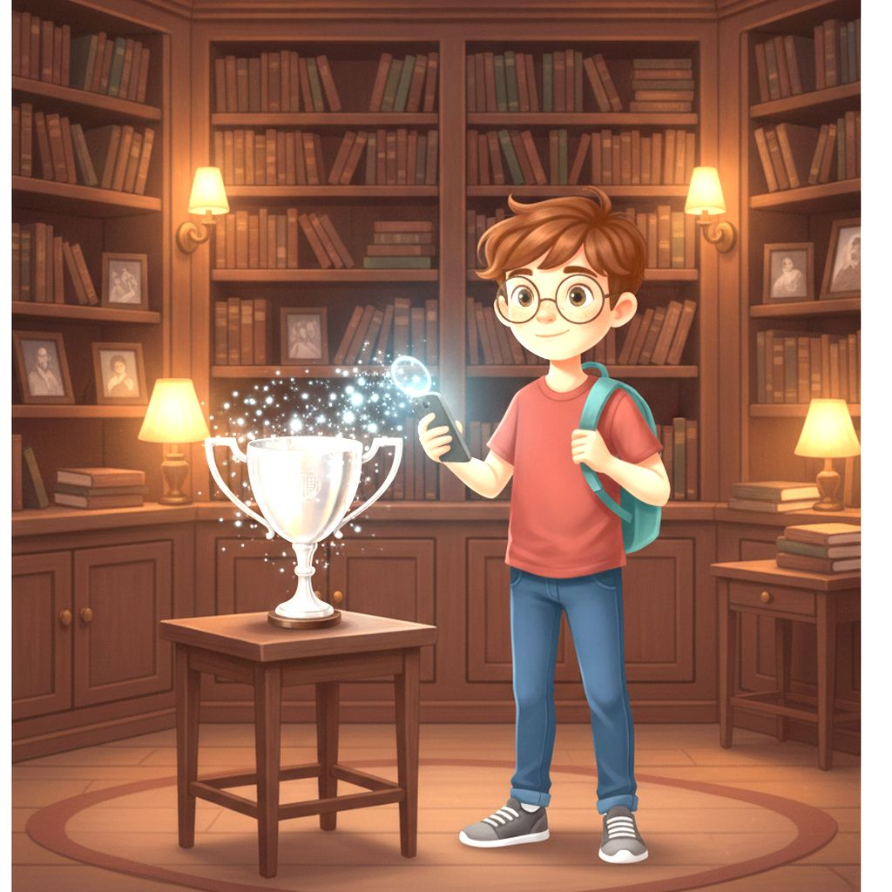
The Hidden Lab and the Journey to the Institute
The loaded car wound upward into the Rocky Mountain air,
the family bound for a holiday where golden wildflowers flare.
But Robin knew the journey's end was not a hotel door —
it was the brain-research institute, and the secret it held in store.
"Grandpa needs some tests," said Mom, her voice gone soft and low.
Robin looked at Papa Sol, whose smile seemed far and slow.
He understood: his grandpa's memory was melting, year by year,
like ice beneath a burning sun—fading, and so dear.
He held the Matrix in his hands, the comfort that remained.
"Gold is the final station now," he thought, as the long road strained.
And when they reached the white-walled institute, he saw with wondering eyes
the instruments that glowed with gold beneath Colorado skies.
The chat buzzed in his pocket: "Here lies the code to mend the good.
Seek the metal that never rusts—that stays, as a true friend would."
And Robin knew: his grandpa's great discovery waited near,
between the cold and quiet walls, patient, bright, and clear.
He slipped into the lab alone while the family found their rest;
the gold was there in tiny chips, the computer's beating breast.
He was ready now to open the gate to the vault beyond the words—
the last of the four great keys, the treasure of the world.
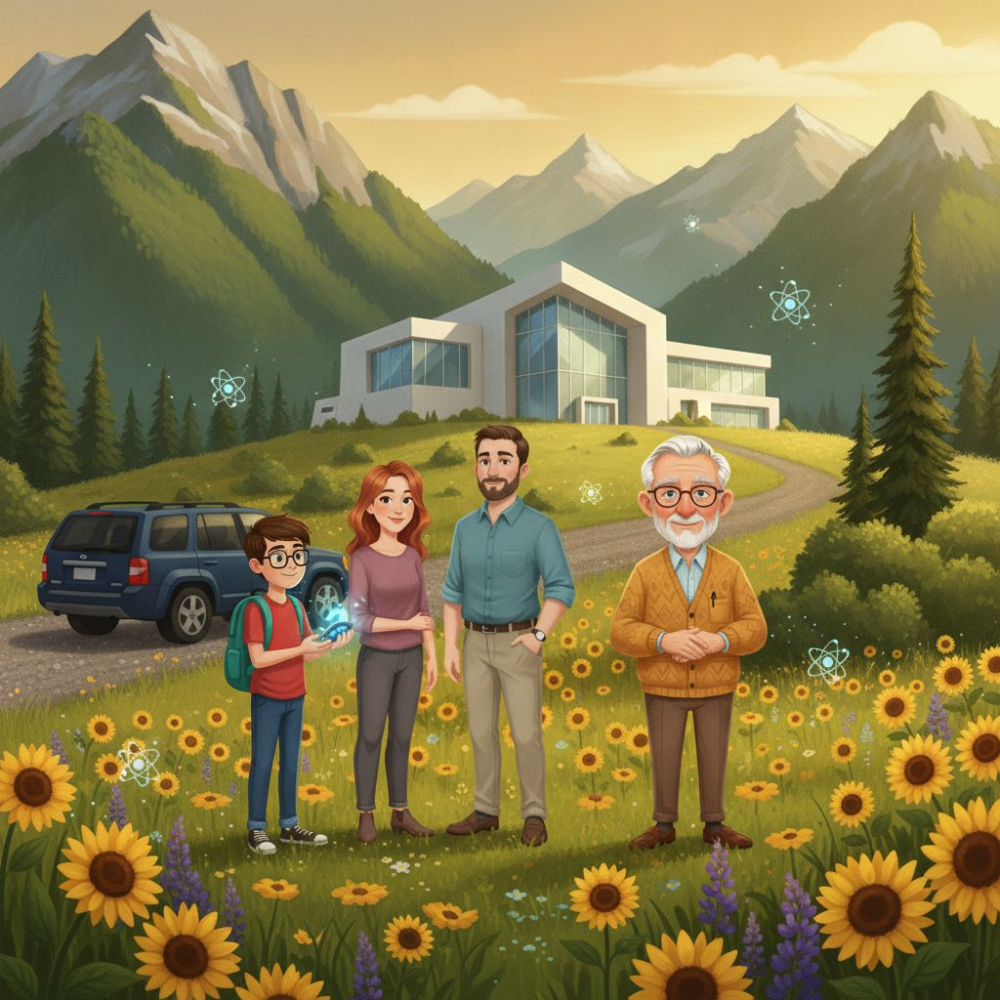
The Flexible Structure and the Secret of Malleability
Robin looked at the pure gold, the soft and flexible metal. He opened the chat on his phone, and the bot sent him a message: "Flexible gold can be rolled into a leaf thinner than a hair, without fear."
"What structure hides this power?" Robin studied the crystal, the perfect cubic structure. He understood that Papa Sol's mind had once been like this too — flexible, and then it vanished.
He wrote on the Matrix the structure that holds everything: FCC (a face-centered cube) — that is how gold is built. He felt the puzzle drawing to a close, and the key leaving its mark.
The journey was deep. From within the structure, memories surfaced. Gold does not break — it only changes form and remains for generations. Robin knew he was close to the end, where he would uncover the insights.
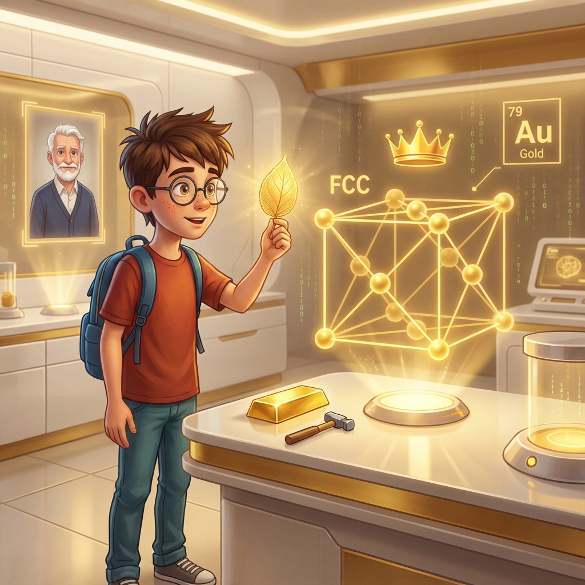
The Eternal Symbol and the Number of Memory
Robin looked at the screen of a huge, sophisticated imaging device. He saw the gold shining in the sensors, guarding the brain from all harm.
"Seventy-nine electrons," he whispered. "This is the number that is never erased from the periodic table."
The chat buzzed, and a message from Papa Sol appeared, as always, right on time: "Gold does not rust, Robin — it stays pure at all times. And even when my memory weakens, your knowledge will be a solid foundation."
Robin understood that this was the discovery: gold in chips that strengthen thought — a technology that would help Papa Sol, and everyone who had lost their memory and their power of thought.
He wrote the number 79 on the Matrix, and his eyes filled with a tear. He knew this code was more than a simple atomic number: it was the gate to the vault, to the discovery that would prevent the blur and the error.
In these moments, as Papa Sol lay on the institute bed, Robin knew that his grandfather was losing his memory — and in his heart, a vision was born! One day he would become the scientist who would find the solution to this disease. He would heal Papa Sol, and help humanity find a cure for forgetting.
He understood that he had to carry on his grandfather's life's work — from memory lost to living memory.
Everything was ready for the right moment — for the last specific weight, and the fateful break-in.
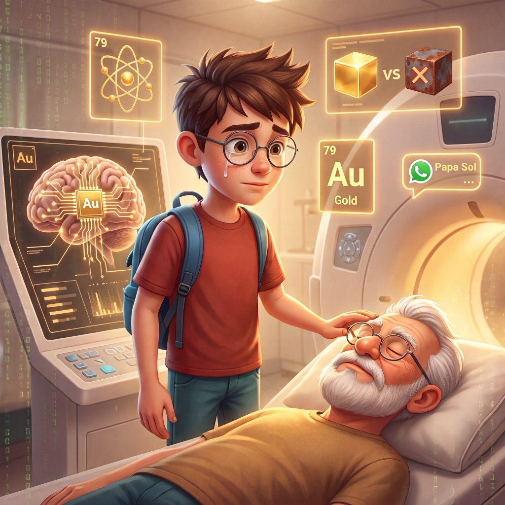
The Golden Age — The Last Gate
Robin set the heavy gold bar upon the scales at the institute; the specific weight 19.32 flashed on the display — strong and true.
And so he was given a path to the vault: papasol.org — scan the code to reach the vault.
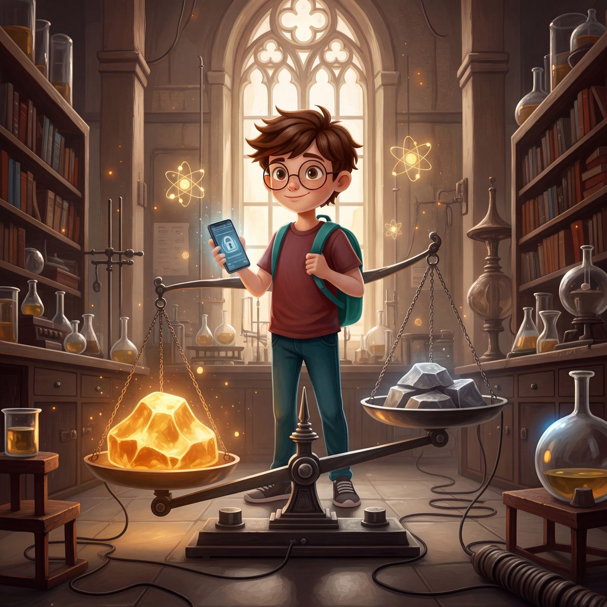
Robin Finds the Vault
Before him rose a sealed steel door, locked tight and unyielding. All at once Robin remembered the password — the string of numbers and letters that had rested inside the box. He keyed it in, and passed to the next stage.
An understanding took shape in his mind: every key he had gathered along the way now held its true worth.
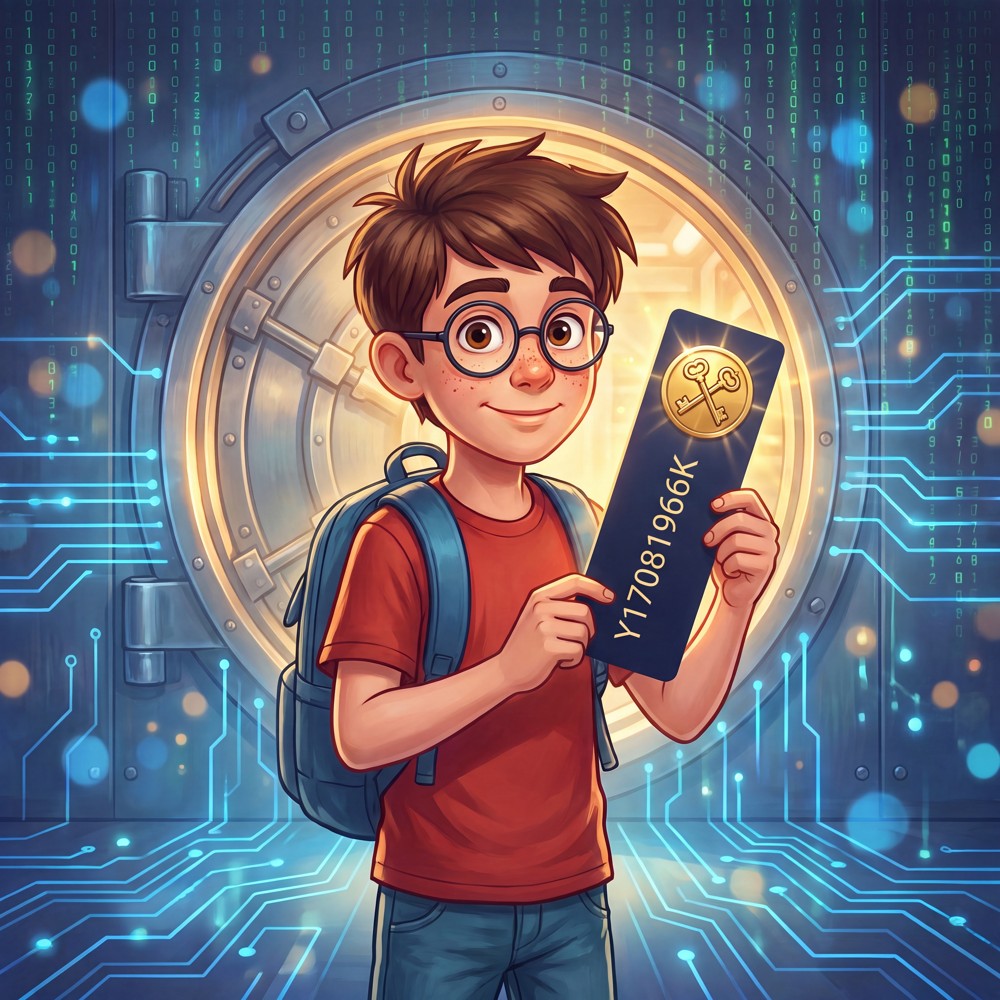
Cracking the Vault
"Type the four keys," said a clear message on the screen. With trembling hands, Robin entered the sequence of specific weights he had gathered along the way: iron, copper, silver, gold.
The sound of an opening lock echoed, and the door swung slowly open. Inside waited the digital chalice: the discovery for connecting a chip to the brain — a gold chip that would guard memory, tangible and human.
Robin knew he would have to use new science to perfect the chip. He smiled and said: "Artificial intelligence will assist human intelligence" — and science and love would prevail.
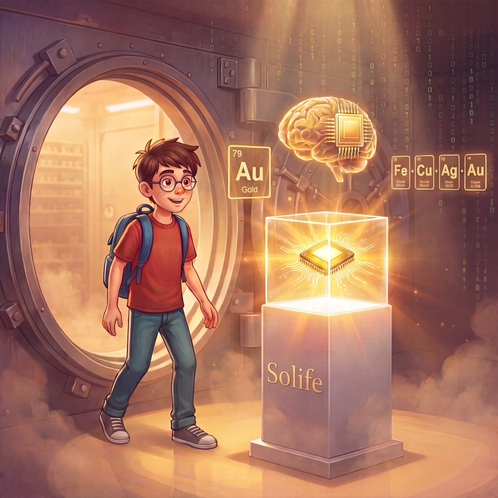
The Disease and the Goal
Papa Sol had fallen ill with Alzheimer's — a disease that erases memory like ink that evaporates.
He planned and built for Robin a series of discoveries, to train his mind to think like a scientist — but also to make sure he would have the knowledge to improve the chip, and to carry on the race Papa Sol might not have time to finish in his lifetime.
Even in his fading mind, Papa Sol saw the future of science in his grandson. He wanted Robin to be the next generation — one that would weave together chips, artificial intelligence, and medicine.
He longed for his dream to come true, never knowing that Robin had already conceived that same dream while at the institute. One day, their dreams would meet.
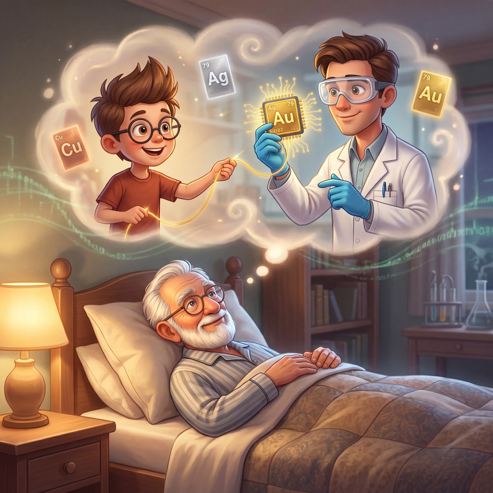
The Discovery ("The Holy Grail")
Inside the vault, a stunning technological breakthrough was revealed: the conductive gold chip.
It was an artificial neural network that used the properties of the elements — iron for structure, copper for electricity, silver for precision, and gold for endurance — to bridge the brain cells the disease had damaged, through a neural connection to pulses of carefully controlled electricity.
Papa Sol had invented a first version of a healing method that combines technology to treat the disease of forgetting — but it still needs a further upgrade to save humanity.
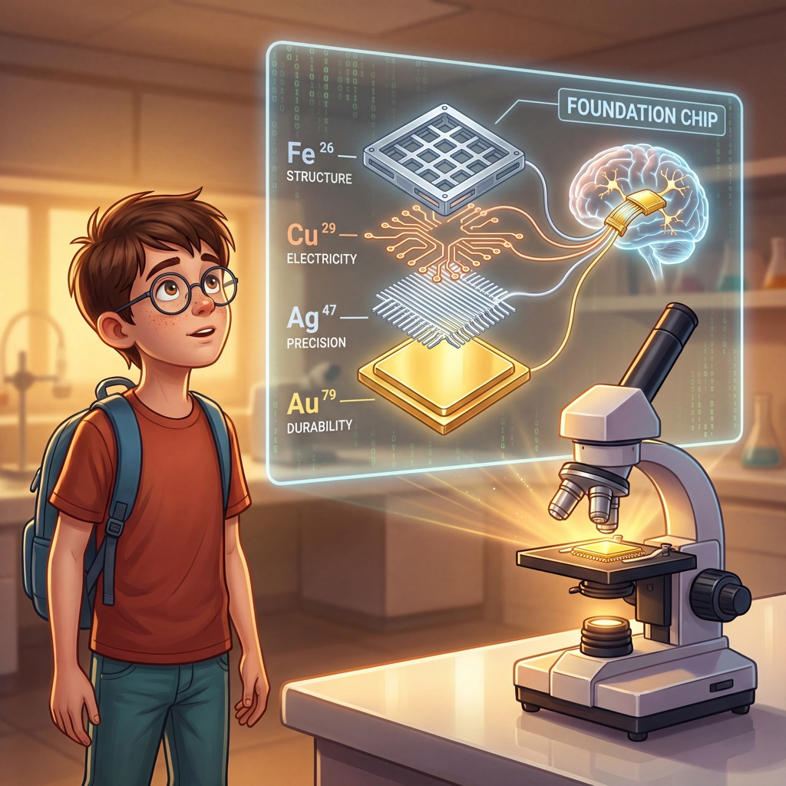
The Letter from the Vault: The Memory That Won't Be Erased
My dear Robin — beloved grandson and young scientist,
if you have opened up this door, it is a sign you were careful.
The illness in my mind is a rust that eats away the iron;
it scrambles up the current, and turns memory to shadow.
The Matrix was my way to train that wonderful mind of yours,
so you would carry on the research I began — without pause.
The chip inside this vault is the discovery: a bridge of gold and copper, iron and silver,
to give people back their glorious past, and hope for a bright future.
I know that at your university you will study nanotechnology and matter,
to build a new reality where forgetting is stopped.
And even when I forget who I am — and perhaps who you are, too —
deep within, I will know that my memory lives in you: in a scientific, perfect, and vital way.
Loving you forever,
Papa Sol.
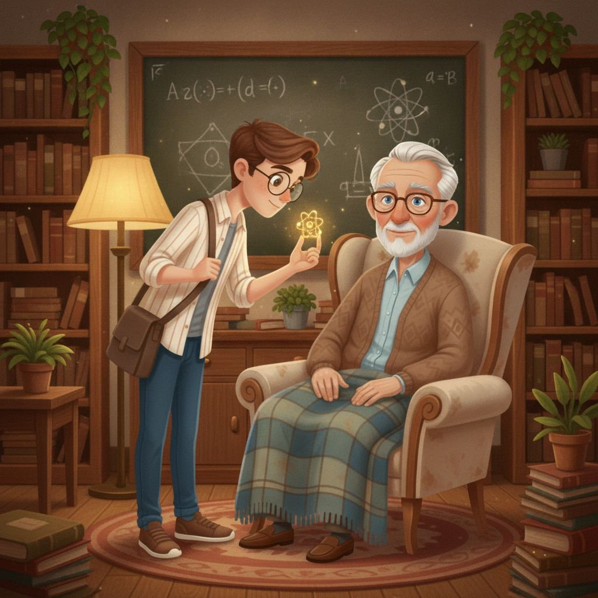
Robin's Studies
Years passed, and the memories took shape. Thanks to the journey, Robin studied materials engineering and nanotechnology at university.
He chose this field so he could realize the patent his grandfather had left him — to turn the technology Papa Sol had begun into a product for the millions of people who suffer from the same disease.
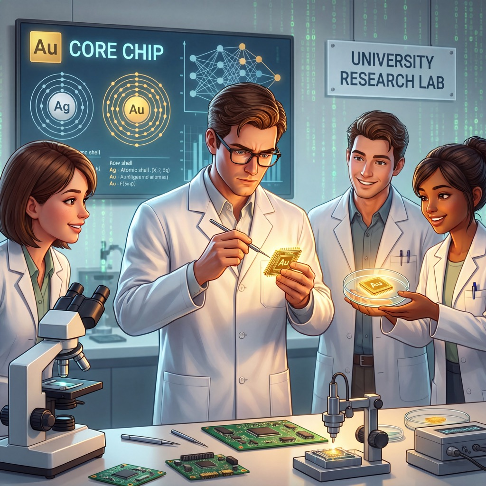
The Moving End
Robin, now a young scientist, comes to visit his grandfather at the institute.
Papa Sol may no longer remember the Matrix, but when Robin shows him the gold chip he has made, a spark of understanding lights in his eyes.
The circle of life rose up for them both — a shared memory of the journey they had traveled together.
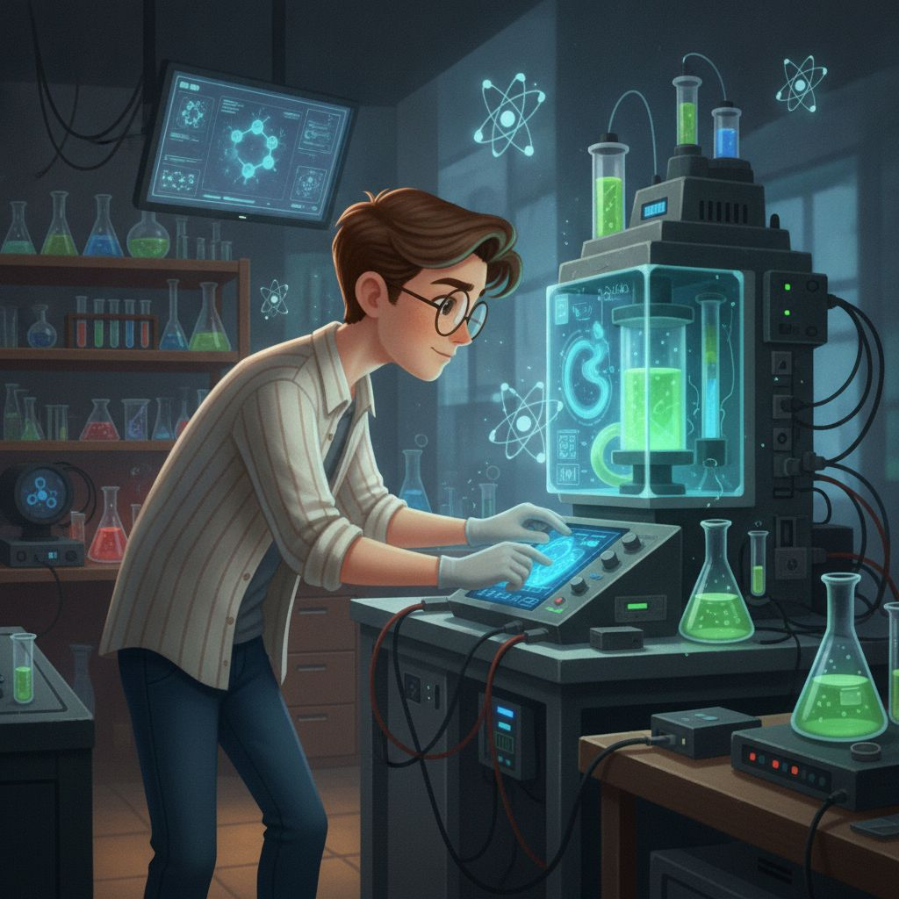
Afterword: Robin's Victory
Years passed, and Robin finished his studies. He developed the Core Chip and succeeded in halting the progress of the disease in his grandfather.
And above all — he understood that the real gold is the bond that had formed between them, through the riddles.
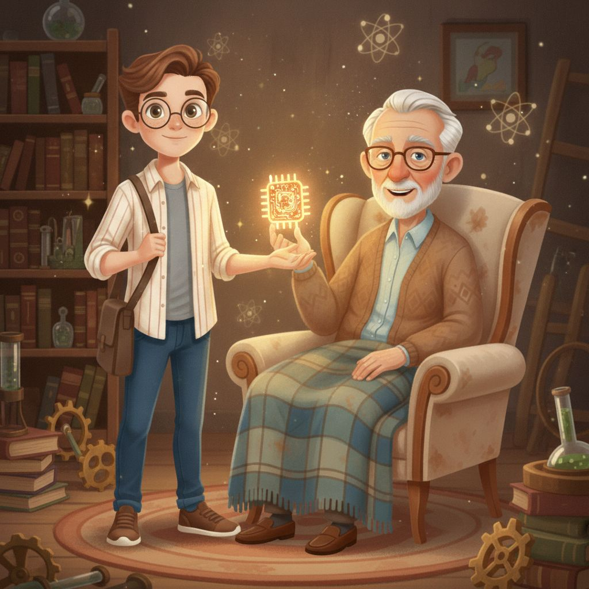
The Sublime Moment: The Nobel Prize and "Solife"
Years passed. Robin stood upon the stage of the Nobel Prize ceremony, held each year in Stockholm, Sweden. Before a cheering, wondering crowd he held the gold medal, brighter than anything in the world.
"This prize," he said, his voice atremble, "belongs to one alone—
to Papa Sol, who never gave up, who strove to mend the world he'd known:
his own world, and the world around him, too.
He was the scientist who taught me that chemistry and technology
are a language of creation and of love.
Through his riddles and his Matrix, I built the chip that drives the hope for brighter days to come;
I named it Solife — it holds his name and his life inside,
for it binds the mind back to the heart, and gives a person back the life that had been lost."
Robin looked to the front row, where Papa Sol sat — frail, but his eyes were shining. Thanks to the chip placed within him, he had lived to see his grandson reap the fruit and rise to greatness.
Gold, silver, copper, and iron — these are the elements on which the hope was built: to bring healing to people, through boundary-breaking technology and care that turn matter into new life.
The moved crowd cheered; Papa Sol knew… the circle had closed.
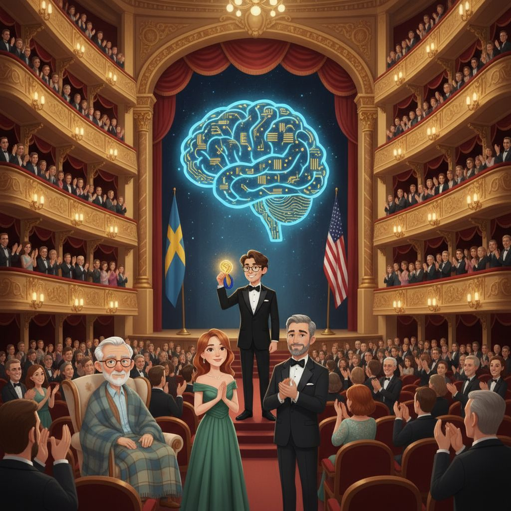
What Is Specific Weight?
Imagine a tiny cube — one centimeter on every side, exactly the size of a sugar cube. Each time, we fill it with a different material: once iron, once copper, once gold. The cube is always the same size — but its weight changes! A cube of gold is far heavier than a cube of iron, because the atoms of gold are packed denser and heavier.
How much a cube like this weighs is the material’s "specific weight." It works like a fingerprint: every material has its own, and you can recognize it by that number alone — exactly as Robin did.
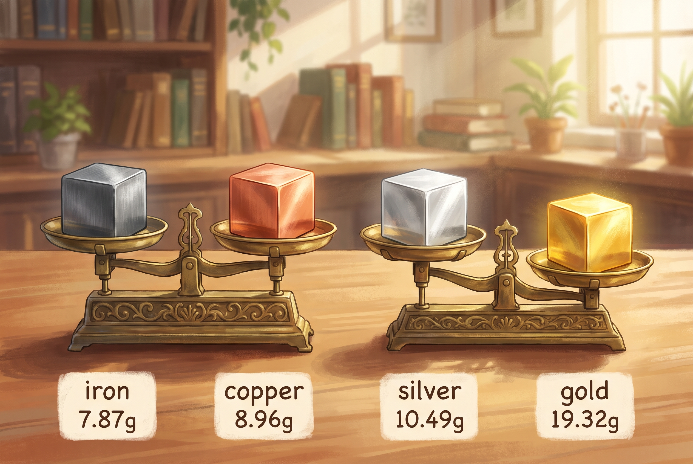
The Elements of the "Solife" Chip
| Element | Symbol | ID (Atomic number) | Specific weight (the code) | Structure |
|---|---|---|---|---|
| Iron | Fe | 26 | 7.87 | Body-centered · BCC |
| Copper | Cu | 29 | 8.96 | Face-centered · FCC |
| Silver | Ag | 47 | 10.49 | Face-centered · FCC |
| Gold | Au | 79 | 19.32 | Face-centered · FCC |
The vault code: 7.87 · 8.96 · 10.49 · 19.32
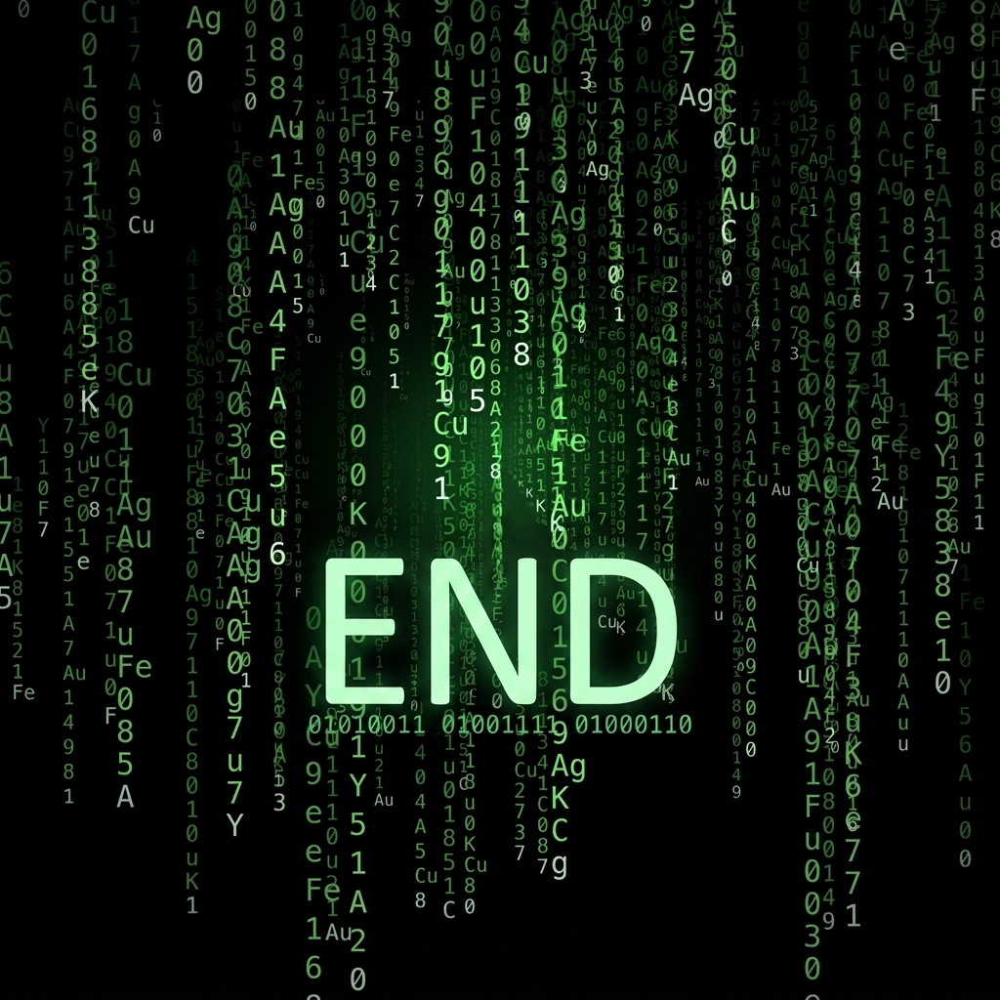

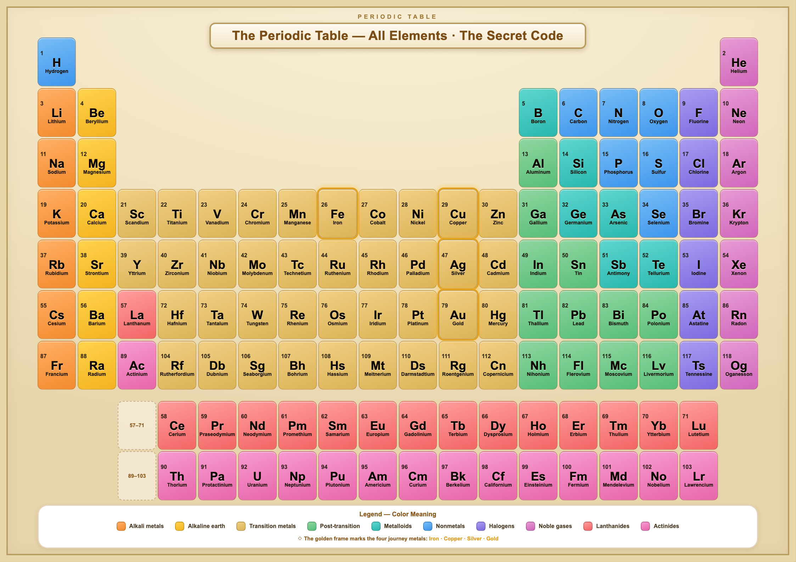
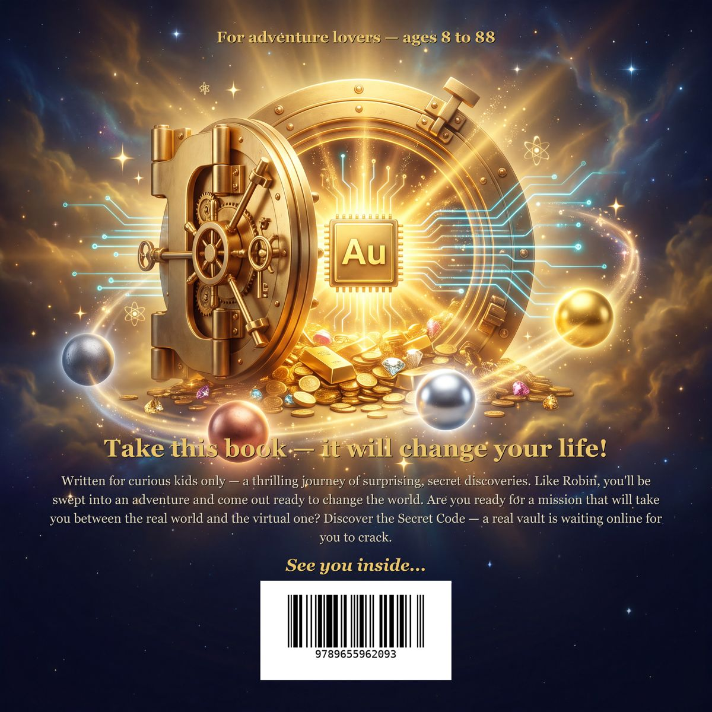